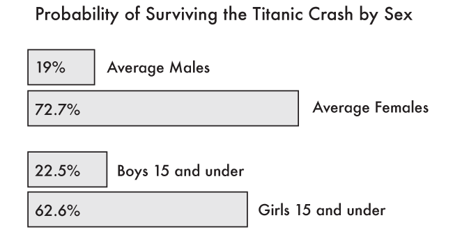
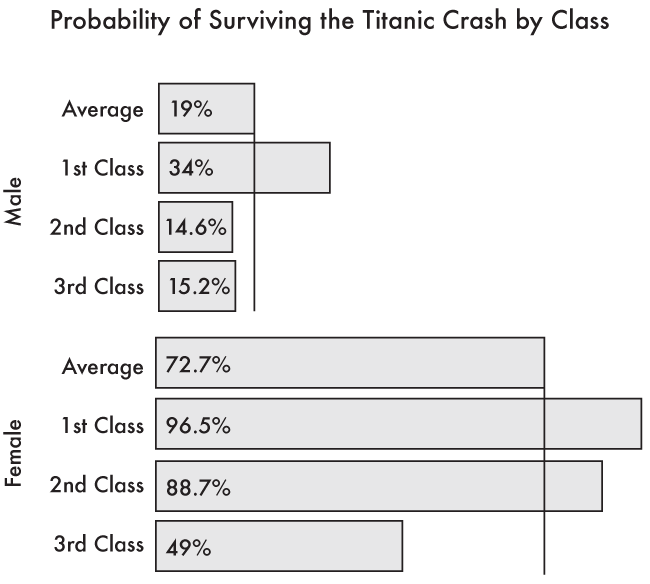
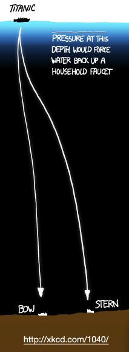

02012 is the 100th anniversary of the sinking of the Titanic. I’m sure you have read plenty of stories about new evidence, interesting new findings, more photos and simulations and even a re-release of the movie Titanic. What hasn’t happened much is a deeper dive into the raw data behind the passengers. This article explores some of those numbers in new and interesting ways. By putting yourself into the shoes of someone on board the Titanic, you can estimate your chance of survival.
Data Set
Firstly, we should define the data set we are using. All the information in these visualisations came from http://biostat.mc.vanderbilt.edu/wiki/Main/DataSets
The wikipedia page about the Titanic Passenger List: http://en.wikipedia.org/wiki/List_of_Titanic_passengers also has data, but not as nice a format. It is difficult to get a completely accurate list, and these two lists, as with many others, differ slightly.
The list I am working with has 1309 passengers listed. There were also around another 885 crew members. The passenger list was a simple CSV (comma separated value) file that listed which class they were in, their sex, name, age, ticket price, destination and if they survived or not. With this list, it is now easy to manipulate the data into various forms of data visualisations.
The first piece of data that we want to analyse is the probability of being a women or child helped in your chance of surviving. As the old saying goes, women and children first, but did it apply to the Titanic?
Of the 1309 passengers, 19% of the men made it off the boat, whereas 72.7% of women did. This is purely a gender split, it isn’t taking into consideration age. When we look at the percentage of passengers 15 and under, we find a slightly better value for males. Of the 378 passengers 15 and under, 22.5% of boys survived and 62.6% for girls. This isn’t that much of a difference, except it means that the older men dragged average down, but older women increased it. If we look next at retirees, 65 and older we don’t find many on the Titanic, and it isn’t a good story when we do. There were 13 passengers, 100% of the women survived (only 1 instance) and only 8.3% of the men (again 1 instance of the remaining 12 men).

We can next break this down by class to see if there was any signs of discrimination of 3rd class passengers. Some accounts make it seem as if they were not told about the crash or the life boat launches. Other descriptions make it seem as if the language barrier of not speaking English also impeded their potential escape.
There were 106 women 3rd class passengers that managed to survive out of th 216 listed. This is a probability of 49% change of survival. This is below the average of 72.7%! For men, there were 75 survivors of the 493 total for a survival change of 15.2%. This is also below the average of 19%, but not nearly as drastic as the women’s.
Rather than comparing 3rd class to the average, which also contains the 3rd class data, let’s see how 3rd class passengers faired compared to 1st and 2nd classes. For men in 3rd class, their survival rate was 15.2%, whereas 1st and 2nd class male passengers had a survival rate of 24.5%. 1st class passengers alone had a survival rate of around 34% and 2nd class around 14.6%. So the 1st class male passengers really had it much better off than their 2nd and 3rd class counterparts.
If we look at the breakdown for women we find something very different. 3rd class women had a survival rate of 49%. Their counterparts in 1st class had a 96.5% chance of making it off the boat. What is interesting is 2nd class women. They had a survival rate of 88.7% which is much closer to 1st class women than 3rd class. The opposite of the men.

The mean average age of each class is also interesting. The older you are, the more likely you were to have been in the higher classes. The mean age for a 1st class passenger was 34.4 years old, a 2nd class passenger was 27.8 years old and a 3rd class passenger was only 17.5. While this is an interesting statistic, it doesn’t actually explain much. Where 3rd class passengers younger or were they simply with more young children, which brought down the average? What is needed is a histogram of ages or the standard deviation by class. At this point we’re getting into much deeper statistical analysis, but for what? How does age distribution explain what happened or contribute to the outcome? Probably very little.
Telling a story
Once you have collected and analysed some of the data, you need to begin to think about how to show it. The first thing you should try to do, is to focus on the story you want to tell. There are a few options, was their a prejudice against lower class passengers, or men? Another angle would be to find your odds of surviving if you were a passenger on the Titanic. We also have other data that wasn’t analysed such as ticket price. Did a better ticket buy you a better chance of surviving?
All of these are valid and potential starts for displaying the data. But the main point is that you need to pick one! Throwing a massive data dump at your readers’ feet won’t actually help them to understand anything, and we’re all guilt of doing it. How many times do we get so excited about the dataset we want to show it off in its entirely. Trust me, you don’t have to do that! The data that was used to get our previous numbers also contains the lifeboat number in which the survivors were rescued. We could have used that data, but sometimes it is more important to leave something out, than to try and work it in.
If you are not thinking about focusing your visualisation to something very concise, then you are probably failing your readers. When was the last time you read a newspaper headline that said, “Something interesting happened today, read the facts and piece it together yourself”. That never happens. It is the job of the journalist to tell the story, just as it is your job to visualise it.
Examples
For the first pass at the data, I tried something new. Instead of visualising it, it tried audio. There are a few PBX audio web services that let you script phone menus. You know, those annoying phone systems you have to wade through when you call any large company… yeah those. Now anyone with moderate coding skills can create them. I decided to come at the Titanic data set as if you were a passenger phoning in to check on your ticket status.
I created a fictitious phone-based boarding card system for the Titanic. You’d ring-up, state your sex and age and it would issue your boarding card for the trip. Using Tropo and a bit of Javascript coding skills, I listen for wether you said “male” or “female” and then when you were asked for your age, that too was recorded as a number. The code then looked through the list of 1309 passengers for people who fit those two demographic variables. If not it would pick someone at random. It would then take the rest of the data, such as the person’s name, job description and if they survived or not and play that back to you in a voice, templated based on the real-life outcome.
It is always a bit spooky to hear “3rd class passenger” said out to you over the phone, knowing that you have a very slim change of making it through to the end of the call alive.
You can try it yourself and see what your outcome would be had you been a passenger. If you are in the US you can call (804) 316-9215. If you are in the UK you can dial 44 2035142721 and for everyone else you can dial in free on Skype with +990009369991481398.
Experimenting with audio was an excellent first pass at the Titanic data set, but a proper static, printable visualisation is desired.
XKCD created a nice, to scale map of depths of various trenches and other deep water, ocean features. As part of the graphic, they added a scale version of the titanic as well as the distance from the surface to the wreck site. It really puts it into context when you see it as a tiny part of the ocean floor to scale.
This visualisation doesn’t dig into any of the passenger statistics, but again, it is telling you one story, focusing it in the context of deep sea exploration.
Taking an existing data set and trying out new techniques at analysing and visualising the data is an excellent way to practice. Sure, the Titanic data has been done to death. Someone even wrote an article about the pets on board and how many of those survived compared to the passengers. But you need to flex that data visualisation muscle by practicing, not everything you produce will be good, so you need to keep at it, make mistakes and learn.
If you are going to play the numbers game, just remember: your best odds of surviving the Titanic disaster was to be a really old lady. Regardless of their class, they had a 100% survival rate!
Downloads
- Tropo Titanic Boarding Pass code (135KB)
- Titanic Vanderbilt CSV file (119KB)